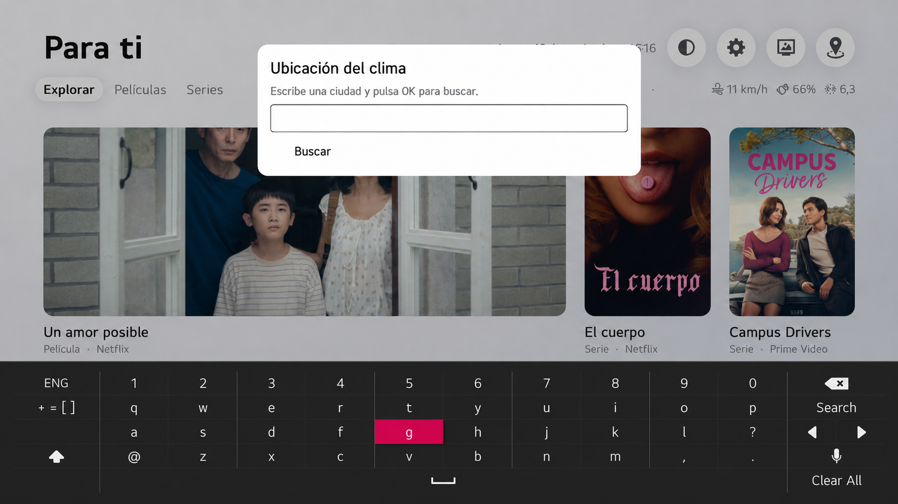
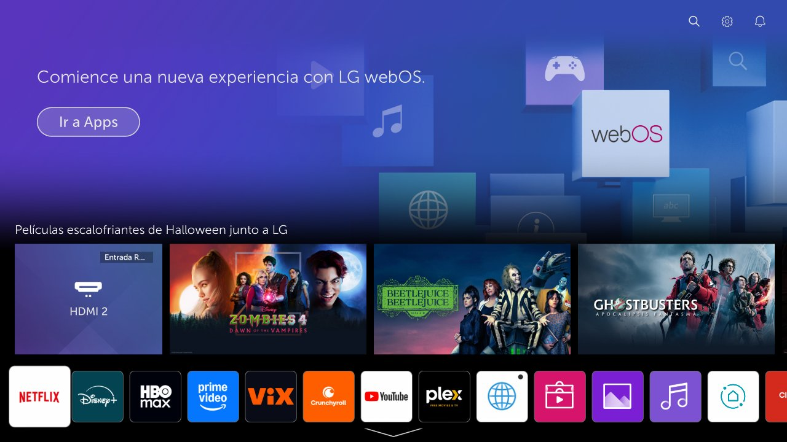
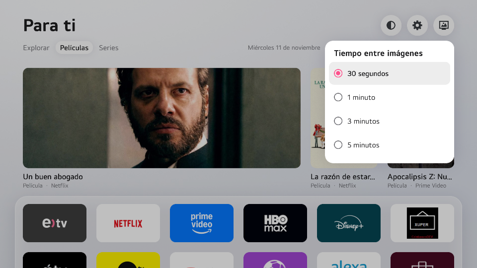

Para televisores LG con webOS
LGlow Atlas
Elige la ciudad que quieres ver en el inicio de tu TV. Cuando la dejes en reposo, convierte la pantalla en una galería de arte enmarcado.
Comprobar mi televisor
El clima de tu ciudad
Escribe el nombre de una ciudad con el teclado del televisor. La barra muestra la temperatura, el viento, la humedad y el índice UV de la ubicación seleccionada.
Arte a pantalla completa
Usa tus propias imágenes enmarcadas, con fundido suave y sin texto ni superposiciones. Elige un intervalo de 30 segundos, 1 minuto, 3 minutos o 5 minutos.
Antes y después

Salvapantallas

Compatibilidad
Comprueba el modelo, el firmware y la aplicación de inicio antes de aplicar un parche. Las adaptaciones locales requieren acceso root y SSH.
Ver notas de instalación ↗| Modelo LG | Firmware | Inicio |
|---|---|---|
| 43UN7300PSC | 04.64.00 | com.webos.app.fullhome |
| 50UP7500PSF | 03.53.45 | com.webos.app.home |
Instalación paso a paso
- Identifica el modelo y el firmware en los ajustes del televisor.
- Consulta las notas de compatibilidad y prepara el acceso SSH.
- Aplica los parches que correspondan a tu firmware y verifica el inicio y el salvapantallas.